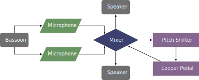

This piece was commissioned by Rachael Elliott in 2021 and was premiered at the International Double Reed Society Virtual Symposium that same year. The piece can be obtained by contacting the composer at her website.
This piece is interesting because it has the option to be performed as a chamber piece or as a solo piece with a looper pedal and pitch shifter. The looper needs to be able to record a fairly lengthy loop, around a minute depending on the tempo. Rachael Elliott used the Boomerang III Phrase Sampler for her performance of this piece. The pitch shifter needs to be able to shift the pitch down a perfect fifth. The performance notes indicate using two condenser microphones for capturing the bassoon sound, although an electric bocal would certainly be a possibility. If the performer uses two microphones, there will need to be a mixer or audio interface to combine the two signals to send to the pedals and to route that signal to the speakers.
The recommended performance diagram is shown below. 
This piece is not very difficult from either a technical or electrical standpoint. The most difficult aspect is the length of the loop itself. The range is conservative, and the rhythms straightforward, despite frequent meter changes. After the loop is set, the performer should improvise over the texture at least once. The harmonies are less tonal or predictable than most progressions with improvisation, but that should not hinder the performer much. This piece would be a great option for introducing looping to any undergraduate student.
The piece has a lot of parallel movement by fifths, and it creates an open, ebbing texture. Fort Greene should be an accessible piece for any audience.
©2025 by Benjamin Bradshaw
Logo ©2025 by Hannah Bradshaw